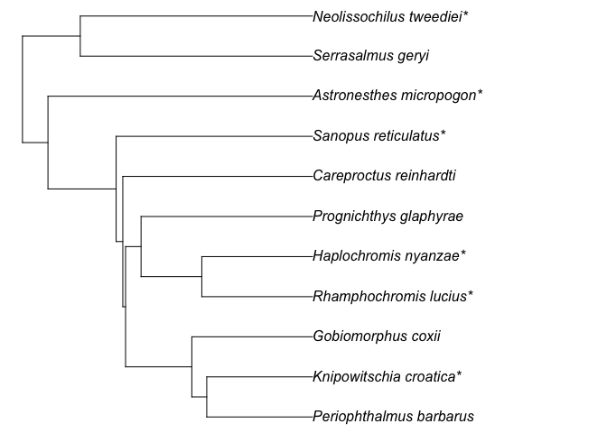

The goal of rtrees is to remove the barriers to derive phylogenies for a list of species from mega-trees. Basically, Phylomatic and more.
Installation
options(repos = c(
rtrees = 'https://daijiang.r-universe.dev',
CRAN = 'https://cloud.r-project.org'))
install.packages("rtrees")The above code will also install one dependency {megatrees}, an R data package that hosts the megatrees used here.
Shinny app
There is also a Shinny app to get phylogenies without using R. However, given that I can only afford the free plan, the number of species to be inserted to the megatrees here will be limited to 1,000.
Mega-trees
Currently, rtrees provides mega-trees for the following taxonomic groups: amphibian, bird, fish, mammal, plant, reptile, and shark_ray. The mega-trees (or subset of 100 posterior phylogenies; 50 for fish to reduce the package size) are saved in the data package {megatrees}.
| Taxon | # of species | # of trees | R object (in {megatrees}) |
Reference |
|---|---|---|---|---|
| Amphibian | 7238 | 100 | tree_amphibian_n100 |
Jetz and Pyron 2018 |
| Bird | 9993 | 100 | tree_bird_n100 |
Jetz et al. 2012 |
| Fish | 11638 | 1 | tree_fish_12k |
Rabosky et al. 2018 |
| 31516 | 50 | tree_fish_32k_n50 |
Rabosky et al. 2018 | |
| Mammal | 5831 | 100 | tree_mammal_n100_phylacine |
Faurby et al. 2018 |
| 5911 | 100 | tree_mammal_n100_vertlife |
Upham et al. 2019 | |
| Plant | 74531 | 1 | tree_plant_otl |
Brown and Smith 2018 |
| Reptile (Squamate) | 9755 | 100 | tree_reptile_n100 |
Tonini et al. 2016 |
| Shark, Ray, and Chimaera | 1192 | 100 | tree_shark_ray_n100 |
Stein et al. 2018 |
Usage examples
Prepare species data frame (optional)
The species lists which we want to have a phylogeny should be provided as a data frame with at least 3 columns: family, genus, and species. Their order does not matter. Here is an example for fish.
test_fish_list = tibble::tibble(
species = c("Serrasalmus_geryi", "Careproctus_reinhardti", "Gobiomorphus_coxii",
"Periophthalmus_barbarus", "Prognichthys_glaphyrae", "Barathronus_bicolor",
"Knipowitschia_croatica", "Rhamphochromis_lucius", "Neolissochilus_tweediei",
"Haplochromis_nyanzae", "Astronesthes_micropogon", "Sanopus_reticulatus"),
genus = c("Serrasalmus", "Careproctus", "Gobiomorphus", "Periophthalmus",
"Prognichthys", "Barathronus", "Knipowitschia", "Rhamphochromis",
"Neolissochilus", "Haplochromis", "Astronesthes", "Sanopus"),
family = c("Serrasalmidae", "Liparidae", "Eleotridae", "Gobiidae",
"Exocoetidae", "Aphyonidae", "Gobiidae", "Cichlidae",
"Cyprinidae", "Cichlidae", "Stomiidae", "Batrachoididae")
)
test_fish_list
#> # A tibble: 12 × 3
#> species genus family
#> <chr> <chr> <chr>
#> 1 Serrasalmus_geryi Serrasalmus Serrasalmidae
#> 2 Careproctus_reinhardti Careproctus Liparidae
#> 3 Gobiomorphus_coxii Gobiomorphus Eleotridae
#> 4 Periophthalmus_barbarus Periophthalmus Gobiidae
#> 5 Prognichthys_glaphyrae Prognichthys Exocoetidae
#> 6 Barathronus_bicolor Barathronus Aphyonidae
#> 7 Knipowitschia_croatica Knipowitschia Gobiidae
#> 8 Rhamphochromis_lucius Rhamphochromis Cichlidae
#> 9 Neolissochilus_tweediei Neolissochilus Cyprinidae
#> 10 Haplochromis_nyanzae Haplochromis Cichlidae
#> 11 Astronesthes_micropogon Astronesthes Stomiidae
#> 12 Sanopus_reticulatus Sanopus BatrachoididaeFor plant, fish, bird, and mammal, it is possible to prepare sp_list with function sp_list_df(); though you should check the results. It is possible to just provide the speices as a character vector for these taxon groups (or all genus in your species list are presented in the phylogeny).
sp_list_df(sp_list = c("Periophthalmus_barbarus", "Barathronus_bicolor"),
taxon = "fish")
#> # A tibble: 2 × 3
#> species genus family
#> <chr> <chr> <chr>
#> 1 Periophthalmus_barbarus Periophthalmus Gobiidae
#> 2 Barathronus_bicolor Barathronus AphyonidaeGet phylogeny from one megatree
Once we have the species list ready, we can then derive a phylogeny from tree_fish.
test_tree = get_tree(sp_list = test_fish_list,
taxon = "fish",
scenario = "at_basal_node",
show_grafted = TRUE)
#>
#> 6 species added at genus level (*)
#> 1 species have no co-family species in the mega-tree, skipped
#> (if you know their family, prepare and edit species list with `rtrees::sp_list_df()` may help):
#> Barathronus_bicolor
plot(test_tree, no.margin = T)
No matter whether show_grafted is ‘TRUE’ or ‘FALSE’, the grafting information was saved along with the phylogeny and can be extracted with the following code:
# or use rtrees::get_graft_status(test_tree)
test_tree$graft_status
#> # A tibble: 12 × 3
#> tip_label species status
#> <chr> <chr> <chr>
#> 1 Prognichthys_glaphyrae Prognichthys_glaphyrae exisiting species in the me…
#> 2 Rhamphochromis_lucius* Rhamphochromis_lucius grafted at genus level
#> 3 Haplochromis_nyanzae* Haplochromis_nyanzae grafted at genus level
#> 4 Knipowitschia_croatica* Knipowitschia_croatica grafted at genus level
#> 5 Periophthalmus_barbarus Periophthalmus_barbarus exisiting species in the me…
#> 6 Gobiomorphus_coxii Gobiomorphus_coxii exisiting species in the me…
#> 7 Careproctus_reinhardti Careproctus_reinhardti exisiting species in the me…
#> 8 Sanopus_reticulatus* Sanopus_reticulatus grafted at genus level
#> 9 Astronesthes_micropogon* Astronesthes_micropogon grafted at genus level
#> 10 Neolissochilus_tweediei* Neolissochilus_tweediei grafted at genus level
#> 11 Serrasalmus_geryi Serrasalmus_geryi exisiting species in the me…
#> 12 <NA> Barathronus_bicolor skipped as no co-family in …Get a set of phylogenies from multiple posterior megatrees
The function rtrees::get_tree() can also work with a set of posterior megatrees with the option to use parallel computing for the whole process. The default number of cores to be used will be the available number of cores minus 2 (so that users can still perform other tasks on their computers at the same time). The output will be a set of generated phylogenies with class multiPhylo; the number of derived phylogenies will be the same as the input megatrees. For this scenario, we can use exactly the same code described above. For example, if we want to use the 100 randomly selected posterior phylogenies that have ~32k fish species, we can add the fish_tree = "all-taxon.
Add tips to user provided trees
It is also possible to derive a phylogeny based on a user provided tree. This can be particularly useful if we have things like Acer_spp that we want to insert to the basal node of the genus.
test_tree = ape::read.tree(text = "(((((((((Potentilla_intermedia:1.156097,Potentilla_gracilis:1.156097):9.169741,Potentilla_bipinnatifida:10.325839):10.466967,Potentilla_sterilis:20.792806):11.333216,Fragaria_virginiana:32.126022):6.026567,(((((Rosa_setigera:3.434279,Rosa_arkansana:3.434279):1.991106,Rosa_spinosissima:5.425386):0.993924,Rosa_acicularis:6.419309):6.730804,(Rosa_micrantha:0.188519,Rosa_canina:0.188519):12.961594):23.677485,(Agrimonia_gryposepala:4.730863,Agrimonia_parviflora:4.730863):32.096735):1.324992):6.47604,(Geum_urbanum:11.153303,Geum_rivale:11.153303):33.475326):1.449852,((((((((Rubus_semisetosus:3.10529,Rubus_glandicaulis:3.10529):0.957584,Rubus_steelei:4.062873):0.398394,Rubus_cuneifolius:4.461267):2.271628,Rubus_vagus:6.732895):0.023439,Rubus_superioris:6.756333):0.020104,(Rubus_multifer:4.287114,Rubus_elegantulus:4.287115):2.489323):0.025475,((Rubus_laciniatus:0.125186,Rubus_bifrons:0.125186):0.11903,Rubus_praecox:0.244216):6.557697):11.571849,(Rubus_parviflorus:14.85915,Rubus_odoratus:14.85915):3.514612):27.704718):16.915234,Filipendula_rubra:62.993714):13.354116,((((((((((Crataegus_dissona:0.081863,Crataegus_florifera:0.081863):0.49838,Crataegus_fulleriana:0.580243):1.434261,Crataegus_crus-galli:2.014503):0.177737,Crataegus_chrysocarpa:2.192239):0.051159,Crataegus_uniflora:2.243399):0.438351,Crataegus_persimilis:2.68175):4.697259,((Malus_toringo:6.472694,Malus_ioensis:6.472693):0.772012,Chaenomeles_speciosa:7.244705):0.134305):1.72489,Pyrus_communis:9.1039):0.313393,Amelanchier_spicata:9.417293):40.039557,((((((Prunus_pumila:6.189944,Prunus_nigra:6.189945):0.37487,Prunus_pensylvanica:6.564815):4.856241,(Prunus_padus:4.816999,Prunus_serotina:4.817):6.604057):29.162527,Sorbaria_sorbifolia:40.583584):2.924475,Rhodotypos_scandens:43.50806):2.718224,(Spiraea_X_bumalda:25.921582,Aruncus_dioicus:25.921583):20.304701):3.230567):26.89098);")
test_tree_sp = c("Rosa_sp", "Rubus_sp", "Amelanchier_sp", "Prunus_sp", "Sorbus_sp", "Potentilla_sp",
"Potentilla_intermedia", "Potentilla_gracilis", "Potentilla_bipinnatifida", "Potentilla_sterilis", "Fragaria_virginiana", "Rosa_setigera", "Rosa_arkansana", "Rosa_spinosissima", "Rosa_acicularis", "Rosa_micrantha", "Rosa_canina", "Agrimonia_gryposepala", "Agrimonia_parviflora", "Geum_urbanum", "Geum_rivale", "Rubus_semisetosus", "Rubus_glandicaulis", "Rubus_steelei", "Rubus_cuneifolius", "Rubus_vagus", "Rubus_superioris", "Rubus_multifer", "Rubus_elegantulus", "Rubus_laciniatus", "Rubus_bifrons", "Rubus_praecox", "Rubus_parviflorus", "Rubus_odoratus", "Filipendula_rubra", "Crataegus_dissona", "Crataegus_florifera", "Crataegus_fulleriana", "Crataegus_crus-galli", "Crataegus_chrysocarpa", "Crataegus_uniflora", "Crataegus_persimilis", "Malus_toringo", "Malus_ioensis", "Chaenomeles_speciosa", "Pyrus_communis", "Amelanchier_spicata", "Prunus_pumila", "Prunus_nigra", "Prunus_pensylvanica", "Prunus_padus", "Prunus_serotina", "Sorbaria_sorbifolia", "Rhodotypos_scandens", "Spiraea_X_bumalda", "Aruncus_dioicus")
plot(get_tree(sp_list = test_tree_sp, tree = test_tree, taxon = "plant",
show_grafted = T, tree_by_user = T), type = "fan")
#> Not all genus can be found in the phylogeny.
#> Warning: For user provided phylogeny, without a classification for all genus of species in the phylogeny,
#> it is unlikely to find the most recent ancestor for genus and family; here we proceed the phylogeny
#> by adding root information for genus and family that can be found in the phylogeny or species list but
#> we recommend to prepare the phylogeny using `add_root_info()` with a classification
#> data frame with all tips first.
#>
#> 5 species added at genus level (*)
#> 1 species added at family level (**)
Pay attention to the warning message there. Because not all genera in the species list are presented in the megatree, it is impossible to find the most recent ancestor for genus and family that are missing from the megatree. Therefore, for user-provided phylogenies, here is the recommended steps:
- Get the classification information (a data frame with two columns: genus and family) for all genera presented in the species list and the megatree.
- Prepare the species list as a data frame with three columns: species, genus, and family using the classification information.
- Process the megatree using function
processed_tree = rtrees::add_root_infor(tree, classification). - Pass the processed megatree to
rtrees::get_tree(sp_list_data_frame, processed_tree)to derive the phylogeny for your species list.
Bind missing species to specified places
It is also possible to specify a particular species to bind with by specifying columns close_sp and/or close_genus.
test_tree_sp_df = sp_list_df(test_tree_sp, "plant")
test_tree_sp_df$close_sp = NA
test_tree_sp_df$close_sp[1] = "Rosa_acicularis" # bind Rosa_sp to here
plot(get_tree(sp_list = test_tree_sp_df, tree = test_tree, taxon = "plant",
show_grafted = T, tree_by_user = T), type = "fan")
#> Not all genus can be found in the phylogeny.
#> Warning: For user provided phylogeny, without a classification for all genus of species in the phylogeny,
#> it is unlikely to find the most recent ancestor for genus and family; here we proceed the phylogeny
#> by adding root information for genus and family that can be found in the phylogeny or species list but
#> we recommend to prepare the phylogeny using `add_root_info()` with a classification
#> data frame with all tips first.
#>
#> 5 species added at genus level (*)
#> 1 species added at family level (**)Some notes
- If
treeis specified, thentaxoncan be ignored if all genus in the species list are presented in the phylogeny. - If a species does not have a co-family species in the mega-tree, it will be skipped.
- If
show_grafted = TRUE, species that are grafted will have one or two*at the end of their names.- If it is grafted at the genus level, one
*. - If it is grafted at the family level, two
*s (i.e.,**).
- If it is grafted at the genus level, one
- The default scenario is
at_basal_node, which will graft species at the genus/family basal node.-
random_below_basalwill randomly select a downstream node to attach the new tip. - If only one species in the mega-tree that is in the same genus/family of the new tip, then the new tip will be grafted at the middle of this species’ branch for all scenarios.
-
- The
treecan be a user provided tree, if so, settree_by_user = TRUE. - See
?get_treefor more details.